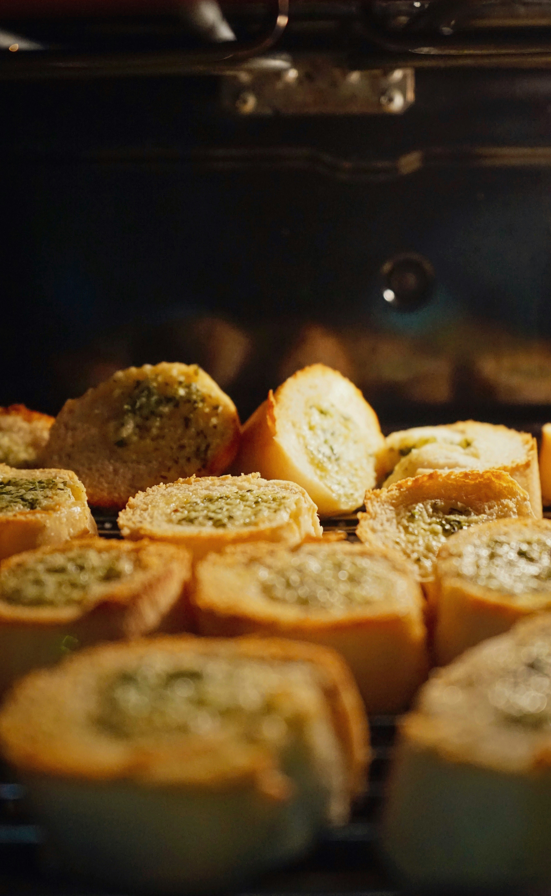

Garlic Bread

Description
Garlic bread is a delicious and easy-to-make side dish that pairs perfectly with pasta dishes, soups, and salads. It's made by spreading a mixture of butter, garlic, and herbs onto slices of bread, which are then toasted until golden and crispy. Garlic bread is a crowd-pleaser that's perfect for family dinners or casual gatherings.
Ingredients
- Baguette or Italian bread
- Butter
- Garlic
- Parsley
Steps
- Preheat the oven to 375°F (190°C).
- In a small bowl, mix together softened butter, minced garlic, and chopped parsley until well combined.
- Slice the baguette or Italian bread into 1-inch thick slices, being careful not to cut all the way through the bottom of the loaf.
- Spread the garlic butter mixture generously onto each slice of bread, making sure to get it into the crevices between the slices.
- Wrap the loaf of bread in aluminum foil and place it on a baking sheet.
- Bake in the preheated oven for 15-20 minutes, or until the bread is warm and the butter is melted.
- For extra crispiness, you can open up the foil during the last 5 minutes of baking to allow the bread to toast.
- Remove from the oven and let it cool for a few minutes before serving. Enjoy!
Home